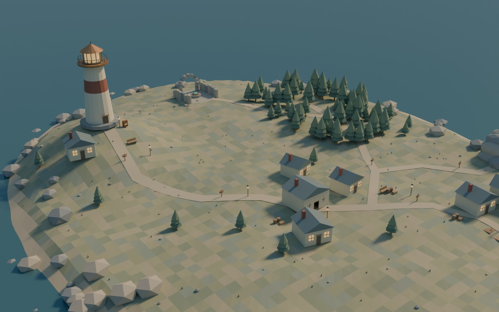

EN Ø. ET LØFTE. ET LYS.
Det sidste
lys.
Du vender hjem til øen, hvor fyret er gået ud.
Elin har efterladt et brev. Havet venter på et svar.
Forbereder den originale 3D-ø …
Et roligt eventyr med otte kapitler · 15–25 minutter
Gemt fremgang · Computer, tablet og telefon